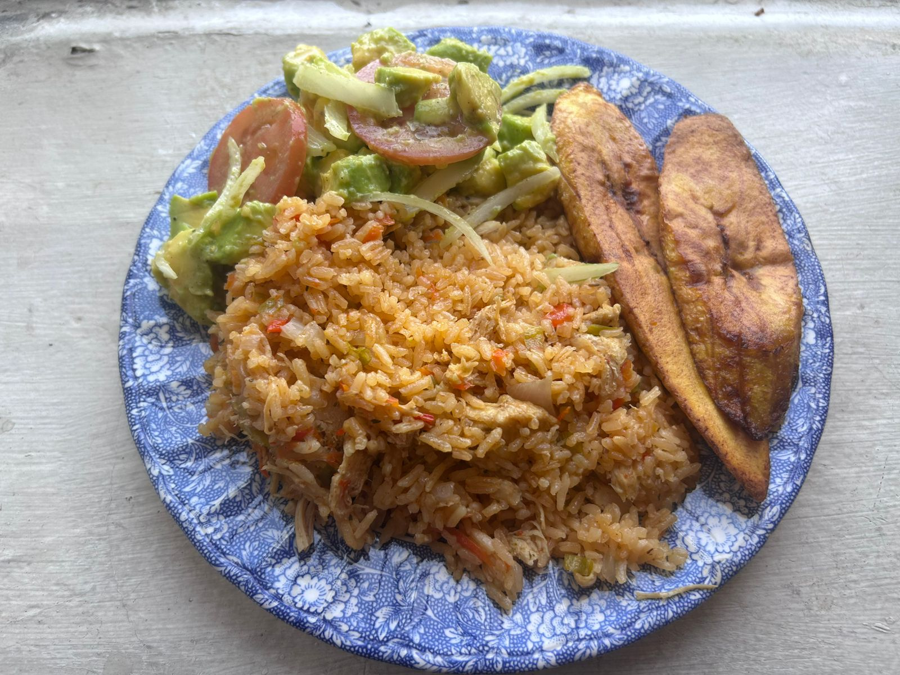

Arroz con pollo

Por Jdvillalobos - Trabajo propio, CC BY-SA 4.0, Wikipedia.com
El ajiaco es un plato típico de muchas regiones de américa y españa, el cual consiste en arroz cocido, sasonado con especias y acompañado o mezclado con pollo entero o en trozos
Ingredientes
- 3 cucharadas de aceite de canola
- 1 pimiento rojo, 1 verde y 1 amarillo de preferencia grandes y cortados en cubitos
- 1diente de ajo machacado
- 1 cebolla mediana, picada
- 3 tazas de arroz blanco de grano largo
- 5 tazas de agua
- 4 pechugas de pollo cocidas, deshuesadas y sin piel, picadas
- 2 tazas de verduras mixtas congeladas
- 1 cubito de caldo de pollo
- sal al gusto
Preparación
- Calienta el aceite en una olla grande a fuego lento. Agrega los pimientos, el ajo y la cebolla. Cocina y revuelve hasta que estén dorados
- Agrega el arroz; revuelve para mezclar.
- Agrega todos los ingredientes restantes; remueve. Cocina a fuego medio unos 15 minutos o hasta que se absorba el líquido.
-
Una vez que el arroz haya absorbido toda el agua, tapa y cocina a fuego lento durante 10 a 15 minutos hasta que el arroz esté tierno.
Receta tomada de quericavida.com
Más Recetas
Ir al inicio